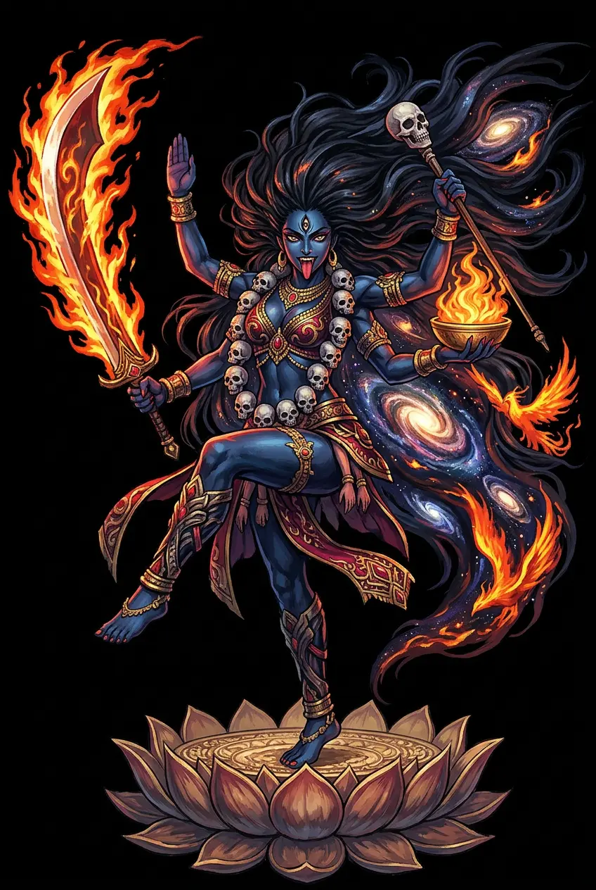

The Living Myth
Time, Destruction, Empowerment · The Black One, Time Itself

Stories of Kālī
Kālī enters scripture mid-battle, leaping from Durgā's brow in the seventh chapter of the Devī-Māhātmya, and she never quite leaves. Behind her battlefield births stand older griefs — the death of Satī, the goddess's body scattered across India — and ahead of her stretches the Tantric theology that made her the supreme deity of Bengal and Assam.
In the war against Śumbha and Niśumbha, the demon Raktavīja seemed unkillable: every drop of his blood that touched the ground spawned another warrior as strong as the first, and Caṇḍikā's arrows multiplied him faster than she could cut him down. Then, as the Devī-Māhātmya (ch. 7) tells it, from the forehead of the battling goddess sprang a new being — black as a storm cloud, gaunt, with a sword, a noose, and a skull-topped staff — who opened her mouth and drank. Kālī swallowed the demon's blood as it spilled, catching every drop on her tongue, stretching her jaws across the battlefield, and devouring his freshly-born doubles until Raktavīja stood alone and died. The gods watched in wonder, and the text names her for what she is: the extreme boundary of the goddess, born when the ordinary weaponry of heaven has failed. She is not rage for its own sake but surgical ferocity against entropy: what bleeds without limit must be drunk without limit.
The Kālikā Purāṇa, the great scripture of Assamese Śāktism, tells of Dāruka, a demon so favored by his austerities that the gods could not touch him — until a flaw in his boon was found: only a woman could kill him. As he tormented the worlds, Kālī went to war, and the text lingers on her armies, her weapons, and her fury. But the war's strangest moment became its most famous image: in the tumult, Kālī — drunk on battle, tongue out, garlanded with heads — failed to notice that she was dancing on the body of her own husband, Śiva, who had thrown himself beneath her feet to bring the dance to an end (Kālikā Purāṇa; the image becomes the standard icon of Kālī standing upon Śiva). The theology is exact: śakti without consciousness is a rampage, consciousness without śakti is a corpse, and only when energy stands upon awareness is the goddess complete. It is the same doctrine the Mahānirvāṇa Tantra will state in philosophical terms, here told as a battlefield accident that the whole tradition chose never to forget.
The myth behind all Kālī's myths is a wedding feast. Dakṣa, father of the goddess, held a great sacrifice and invited every power in the universe — except his son-in-law Śiva. Satī came uninvited, argued with her father over the insult, and abandoned the body he had given her in the sacrificial fire; the tale is told across the Purāṇas — Śiva Purāṇa, Vāmana Purāṇa, Matsya Purāṇa 12 — with differing details. Śiva danced the Tāṇḍava with her corpse upon his shoulder, and the worlds began to shake, until Viṣṇu loosed his discus and the body fell in pieces across the subcontinent — fifty-one pieces in the standard reckoning, each a Śakti Pīṭha, a seat of the goddess (Matsya Purāṇa 12–13). Kālī is the black form of that grief and that power: the goddess after the body has been taken from her, pure energy without a veil. The myth explains her geography — India is her body — and her ferocity: she is what love becomes when it is refused.
Why does Kālī bite her tongue? Bengali tradition answers with a story of the war's aftermath: the goddess, intoxicated with the blood of the demons, danced across the battlefield in a frenzy that threatened to unmake the world, and nothing could calm her — until Śiva, her husband, lay down in her path. She stepped on him before she saw him, and at the touch of that horror — the Mother standing on the Lord — she stopped, and bit her tongue in shame. The image was fixed forever in clay and paint: the black goddess, tongue extended, one foot on the breast of the prostrate Śiva, his trident and drum beside him. The tradition that tells the story is folk and festival lore rather than a single Sanskrit chapter, and scholars note its late crystallization in Bengal — but its theology is early: śakti awakened and śiva at rest, and the exact moment when power realizes what it stands upon. Every Bengali image of Kālī is this story in one frame.
In the Tantras, Kālī stops being a character in stories and becomes the story's author. The Mahānirvāṇa Tantra (5.109ff.) addresses her as the supreme deity, beyond the gods themselves: black because she is the color into which all colors return, garlanded with fifty skulls because the fifty letters of the Sanskrit alphabet — every possible word — hang from her neck, standing upon Śiva because consciousness is inert without her energy. She is worshipped at the cremation ground, at midnight, in the disciplines that break the small self against its fear of death. The Tantric reading turns her horror into mercy: the skull-staff is a walking-stick for the journey through the worlds, the cremation ground is the mind, and the fear she inspires is the last obstacle between the devotee and freedom. To know Kālī, the texts say, is to stop running from the end — and to find, in the place of the end, the beginning. It is the boldest theological move in Hinduism: the goddess the missionaries found most degraded is here the absolute itself.
The Black One of the Battlefield and the Cremation Ground
Kālī is the most terrifying and most tender of Hindu goddesses. She appears when the boundary between life and death, order and chaos, becomes thin enough to see through. With black skin, a garland of skulls, and a tongue that laps blood, she is the raw form of śakti — the feminine power that creates by destroying and destroys by creating.
As the feminine of kāla, she is time itself — the devourer of minutes, years, and egos.
Her sword severs the head of ignorance; her dance grinds the demon of ego beneath her feet.
Especially for the marginalized, Kālī is the mother who grants ferocious courage against oppression.
She stands outside conventional purity, teaching that the sacred includes what society rejects.
From the original script to the living URL
काली
The name in its original Sanskrit form. Kālī (काली) is attested in the source tradition — “The Black One — the fierce goddess of time and destruction, consort of Śiva (fem. of kāla)”. Its macron-length vowels carry the full phonetic and orthographic weight of the source tradition.
kali
Reduced to plain kali, the name loses everything that made it specific: macron-length vowels. What remains is an ASCII string that machines can parse but that no longer speaks with its original voice.
Kālī
The Unicode restoration recovers what ASCII flattened. Kālī restores macron-length vowels, returning the name to its original written dignity. The domain encodes to Punycode, but the browser displays the truth.
Kālī.com → xn--kl-dla3o.com
The non-ASCII characters in Kālī are encoded while the ASCII remains visible. To the DNS, it is Punycode. To humanity, it is Kālī.
Owned, ideal, and ASCII forms of Kālī
Kālī
Restores काली. The live temple domain — kālī.com.
kali
Flattens काली. The plain ASCII fallback — what DNS and legacy systems see.
How Kālī was spoken
How Kālī travels from ancient script to the modern URL
Sanskrit Kālī; from kāla “time, black"; the black goddess of time, destruction, and transformation.
Time, Destruction, Empowerment
The IAST form Kālī uses registrable Latin diacritics; the Devanagari form is not supported in .com.
Most of us spend our lives trying to keep Kālī out. We lock the door against death, shame, rage, and the parts of ourselves that do not fit the daylight world. Kālī is the one who kicks the door down. She is not cruel; she is honest. Time was always devouring us. The ego was always a borrowed costume. The blood she drinks is the blood of our pretending.
Enter Extended Lore